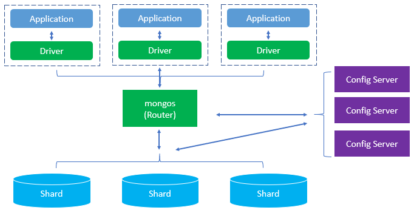

MongoDB is a popular open-source, NoSQL database designed for storing and managing large volumes of unstructured or semi-structured data. Unlike traditional relational databases that use tables and rows, MongoDB stores data in flexible, JSON-like documents called BSON (Binary JSON), allowing for dynamic schemas. This means each document can have a different structure, making it ideal for applications that require scalability, real-time processing, or handle varying data formats.
MongoDB is known for its high performance, horizontal scalability, and ease of development. It supports powerful features such as indexing, aggregation, replication, sharding (for distributed data), and built-in security. Developers commonly use MongoDB in modern web, mobile, and cloud-based applications, especially those built with JavaScript-based technologies like Node.js and frameworks like Express and React.
In summary, MongoDB provides a flexible, scalable, and developer-friendly solution for managing data in today’s fast-paced application environments, making it a key choice in the NoSQL database ecosystem.
